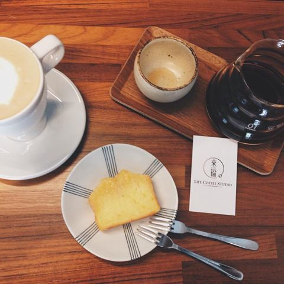
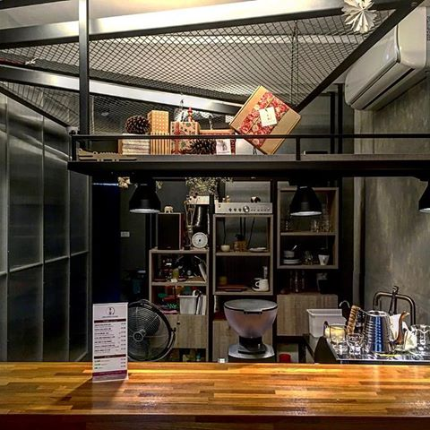

來福咖啡Life Coffee Studio


一開始以為是店內有隻狗叫來福的，後來發現是「生活」的英文單字LIFE諧音，店內就只有三個高腳椅座位，騎樓也一組座位。六款咖啡豆單，兩款磅蛋糕，然後就坐在吧台看老闆娘沖咖啡，也可以跟她聊一下咖啡經。 老闆娘原本是在台北的咖啡店服務, 因為家庭因素回來高雄開店, 我現在很多台北的甜點店名單都是她提供給我的喔XD 超明顯的花香是這家咖啡店的特色, 也因此被我特別拿出來介紹, 老闆娘所使用的沖煮方式也是比較特別的kono式煮法, 煮完需要耗時5分鐘的時間, 但是煮出來的味道甜感會非常濃厚, 小編如果回高雄都會來這裡帶一包咖啡豆回台北呢XD